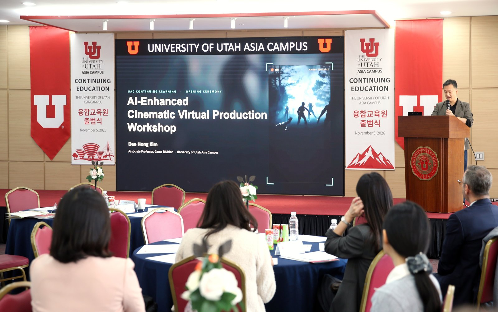

송도 유타대, 시민에게 강의실 연다…12월 첫 겨울학기
성인·직장인·청소년 3개 분야 '융합교육원' 출범
AI경제저널=김갑봉 기자 | 송도 인천글로벌캠퍼스의 유타대학교 아시아캠퍼스가 재학생이 아닌 시민과 직장인, 청소년에게 강의를 여는 융합교육원을 5일 출범했다. 12월 첫 겨울학기에 심리학, 전략적 브랜딩·마케팅, 요가와 마음챙김 같은 성인 과정을 연다. 수강신청은 이달부터 융합교육원 누리집에서 받는다.

성인 교양, 직장인 실무, 청소년 진로
융합교육원은 유타대 아시아캠퍼스의 부설 평생교육기관이다. 대학 교수진과 교육 시설을 지역 주민에게 연다. 지역사회와 기업의 교육 수요에 맞추려는 뜻이라고 인천경제자유구역청은 밝혔다.
교육과정은 세 갈래다. 성인 대상 교양·자기계발, 직장인·전문인력 대상 실무·전문역량, 청소년 대상 진로 탐색·미래인재 교육이다. 내년 1월에는 중·고등학생을 위한 게임 개발 집중 과정을 연다.
출범식은 5일 오후 유타대 아시아캠퍼스에서 열렸다. 설립 취지와 운영 계획을 소개하고, 유타대 교수진이 참여한 특별 세션과 참석자 교류 순서를 가졌다.
2014년 문 연 캠퍼스, 학과에서 나온 강좌
유타대 아시아캠퍼스는 2014년 9월 겐트대와 함께 인천글로벌캠퍼스에 문을 열었다. 학부생은 3년을 송도에서, 1년을 미국 솔트레이크시티 본교에서 공부한다.
송도 캠퍼스 학부에는 신문방송, 심리, 영화영상, 회계, 정보시스템, 도시계획, 전기컴퓨터공학, 게임 학과가 있다. 첫 학기 심리학 강좌와 청소년 게임 개발 과정은 송도 캠퍼스에 있는 학과와 분야가 같다.
융합교육원이 인천에 말하는 것
첫째, 시민이 받을 것이다. 송도의 미국 대학 교수진 강의를 학위 과정에 들지 않고 들을 수 있다. 문의는 융합교육원 전화(032-626-6910)와 전자우편(uce@utah.edu)으로 받는다. 수강료와 정원, 강의 언어는 이번 발표에 나오지 않았다.
둘째, 인천글로벌캠퍼스의 처지다. 인천글로벌캠퍼스는 외국 대학 10곳과 학생 1만 명을 목표로 세운 국책 사업이다. 운영재단이 밝힌 총사업비는 9000억 원이고, 캠퍼스 건립비의 50%를 국비와 지방비로 보조했다.
지금 입주한 곳은 한국뉴욕주립대, 한국조지메이슨대, 겐트대, 유타대, 뉴욕주립대 패션기술대(FIT) 다섯이다. 목표한 학교 수의 절반이다.
셋째, 일터와 기업이다. 직장인 실무 과정은 지역 기업의 교육 수요에 맞춘 것이라고 경제청은 밝혔다. 유타대는 2024년 9월 인천시와 바이오 협력 협약을 맺었다. 인천 바이오 기업의 미국 식품의약국(FDA) 인허가와 현지 진출을 돕기로 했다.
넷째, 행정의 몫이다. 김종철 인천경제자유구역청장은 대학과 지역사회·기업의 협력을 강화해 주민의 평생학습 기회를 넓히겠다고 말했다. 경제청이 무엇을 얼마나 지원하는지는 발표에 없다.
겨울학기 신청은 누리집에서
겨울학기 수강신청은 이달부터 융합교육원 공식 누리집에서 받는다. 과정과 일정은 융합교육원(032-626-6910)이 안내한다. 첫 강좌는 12월에 열린다.
참고문헌
- 인천경제자유구역청 서비스산업유치과(2026). 유타대학교 아시아캠퍼스 융합교육원 출범… 지역사회 평생교육 확대(보도자료, hwpx). 2026년 11월 5일. https://www.incheon.go.kr/IC010205/view?repSeq=DOM_0000000015901633
- 인천경제자유구역청 미디어문화과(2026). 행사사진 「유타대학교 아시아캠퍼스 융합교육원 출범」. 2026년 11월 5일. https://www.ifez.go.kr/promote/pst/view.do?pst_id=event_photo&pst_sn=671117
- 인천글로벌캠퍼스운영재단. IGC 개요(추진경과)·캠퍼스 조성현황·입주대학 현황. https://www.igc.or.kr/ko/aboutIgc01.do 외
- University of Utah Asia Campus. About Utah Asia Campus. https://asiacampus.utah.edu/about-utah-asia-campus/
- 인천광역시 반도체바이오과(2024). 유타대, 인천 바이오 산업 육성에 힘 보탠다(보도자료). 2024년 9월 29일. https://www.incheon.go.kr/IC010205/view?repSeq=DOM_0000000010779668
[사진 출처]
- [사진1] 인천경제자유구역청 홍보센터 행사사진 「유타대학교 아시아캠퍼스 융합교육원 출범」, 공공누리 제1유형, 2026.11.5., https://www.ifez.go.kr/promote/pst/view.do?pst_id=event_photo&pst_sn=671117
관련기사
- 인천경제청 "송도 에디슨 박물관 빼지 않는다…C1블록 도서관과 함께 검토"
- 청라 영상단지 준공 2031년으로 4년 늦춰…IFEZ, 콘텐츠·바이오로 판 짠다
- 인천 로봇기업 8곳 "현장 같은 시험장 달라"…로봇랜드 테스트베드 밑그림
저작권자 © AI경제저널 무단전재 및 재배포, AI학습 및 활용 금지